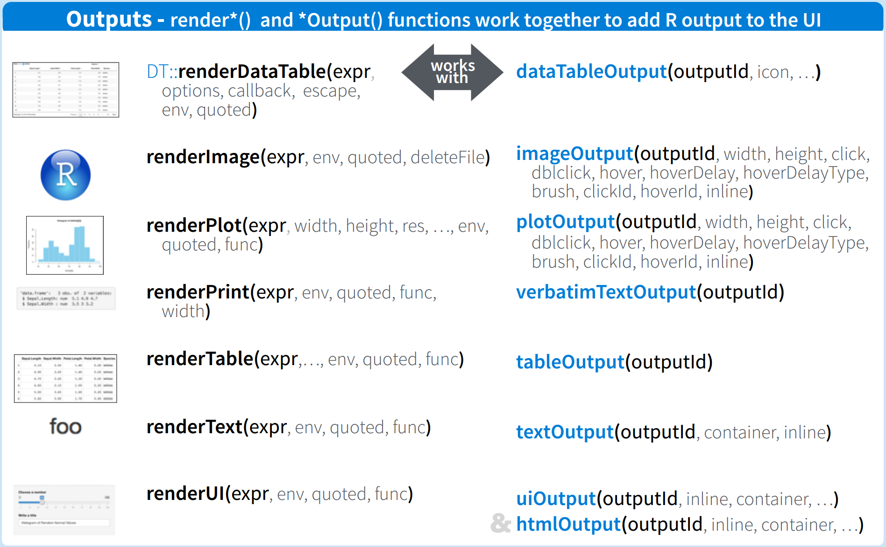

# Load package shiny
library(shiny)
# Define UI for application
ui <- fluidPage(
)
# Define server logic
server <- function(input, output) {
}
# Build and run the application
shinyApp(ui = ui, server = server)Shiny I
Announcements
Reminder:
- Project tips next Friday, April 14.
- Final project presentations during lab Tuesday, April 25.
Shiny notes
Overview of shiny
fluidPage()creates a dynamic HTML user interface you see when you look at an RShiny app. Convention is to save this as an object namedui.server()is user-defined and contains R commands your computer or external server need to run the app.shinyApp()builds the app based on the user interface and server pair of code.
Examples
Enter any of the following in your console to see the shiny app in action along with the code.
runExample("01_hello") # a histogram
runExample("02_text") # tables and data frames
runExample("03_reactivity") # a reactive expression
runExample("04_mpg") # global variables
runExample("05_sliders") # slider bars
runExample("06_tabsets") # tabbed panels
runExample("07_widgets") # help text and submit buttons
runExample("08_html") # Shiny app built from HTML
runExample("09_upload") # file upload wizard
runExample("10_download") # file download wizard
runExample("11_timer") # an automated timerUI input (widgets)

UI input code
Inputs are added with *Input. Scroll through the code below to grab what you need or check it out from the tutorial here
library(shiny)
# Define UI ----
ui <- fluidPage(
titlePanel("Basic widgets"),
fluidRow(
column(3,
h3("Buttons"),
actionButton("action", "Action"),
br(),
br(),
submitButton("Submit")),
column(3,
h3("Single checkbox"),
checkboxInput("checkbox", "Choice A", value = TRUE)),
column(3,
checkboxGroupInput("checkGroup",
h3("Checkbox group"),
choices = list("Choice 1" = 1,
"Choice 2" = 2,
"Choice 3" = 3),
selected = 1)),
column(3,
dateInput("date",
h3("Date input"),
value = "2014-01-01"))
),
fluidRow(
column(3,
dateRangeInput("dates", h3("Date range"))),
column(3,
fileInput("file", h3("File input"))),
column(3,
h3("Help text"),
helpText("Note: help text isn't a true widget,",
"but it provides an easy way to add text to",
"accompany other widgets.")),
column(3,
numericInput("num",
h3("Numeric input"),
value = 1))
),
fluidRow(
column(3,
radioButtons("radio", h3("Radio buttons"),
choices = list("Choice 1" = 1, "Choice 2" = 2,
"Choice 3" = 3),selected = 1)),
column(3,
selectInput("select", h3("Select box"),
choices = list("Choice 1" = 1, "Choice 2" = 2,
"Choice 3" = 3), selected = 1)),
column(3,
sliderInput("slider1", h3("Sliders"),
min = 0, max = 100, value = 50),
sliderInput("slider2", "",
min = 0, max = 100, value = c(25, 75))
),
column(3,
textInput("text", h3("Text input"),
value = "Enter text..."))
)
)
# Define server logic ----
server <- function(input, output) {
}
# Run the app ----
shinyApp(ui = ui, server = server)UI input notes
sliderInput(inputId = "bins", label = "Number of bins:",
min = 1, max = 50, value = 30)Each widget contains an inputId and a label.
inputIdis how you identify the user input on the back-endlabelis what the user sees.
UI output
Outputs are added with *Output().
| Output function | Creates |
|---|---|
dataTableOutput |
data table |
htmlOutput |
raw html |
imageOutput |
image |
plotOutput |
plot |
tableOutput |
table |
textOutput |
text |
uiOutput |
raw html |
verbatimTextOutput |
text |
UI render an output

The first argument for each output function is outputId. This argument is where you specify a name for the output not seen by the user. This name will serve as reference for code in function server().
Shiny demo
Code from the in-class example
Below you can download the example we built in-class 04/05.
download.file("https://sta323-sp23.github.io/scripts/BetaBinomialShinyApp.R",
destfile = "BetaBinomialShinyApp.R")Below you can download the example we built in-class 04/07.
download.file("https://sta323-sp23.github.io/scripts/ABCShinyApp.R",
destfile = "ABCShinyApp.R")